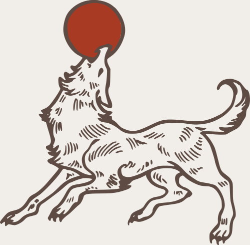
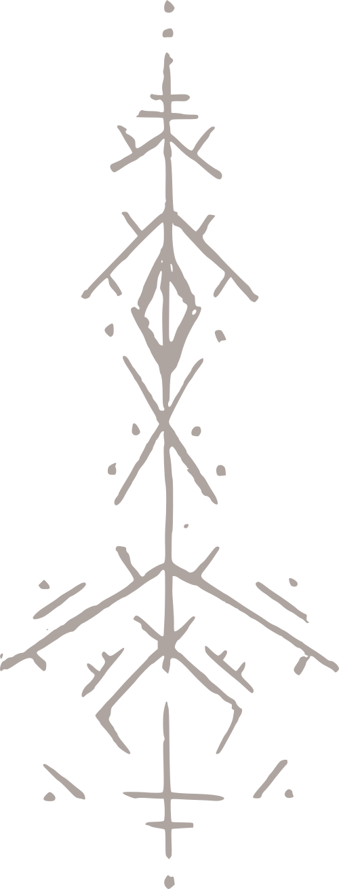

Three Houses. One Hallowed Land.


Abyssos
Lucifer Abyssos
Lilith Abyssos
Based in the land of Erebus, the house Abyssos rules with an iron fist from its palace, Kurfort, above the city of Dis. They are known for two things: first, the slave trade which stems from the Bronze Chain beyond the Orcus Delta, and second, the royal family’s sympathy toward Carnists.

Winchester
John Winchester
House Winchester rules over the land of Amicanis, a region that stretches over the central mountains of Akris, from Castle Lahrenbreck in the capital city of Lahren. This house has long been at the center of a prophecy predicting their doom, and the birth of two omega princes – breaking the line of succession – has sealed their fate.

Empyrean
Charles Empyrean
Michael Empyrean
Empyrean is an old house that rules over Ouranos, the breadbasket of Caulet, from the great white Castle Lotus on the Kenoma Sea, overlooking the lush paradise of Eden. Having conquered the region once before, the many sons of Empyrean dream of uniting the land once again.
